Click the buttons below to learn about each planet!
Mercury
The first planet from the sun.
Orbit (the time it takes to complete one full revolution
around the sun ): 88 Earth Days
Day (the time it takes to complete a full spin on its
axis): 59 Earth Days
Fun fact: Even though it is the closest planet to the sun,
Mercury's dark side's temperature drops to about -290
degrees Fahrenheit
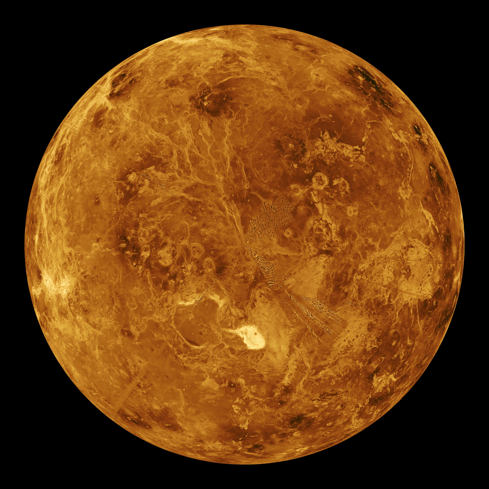
Venus
The second planet from the sun.
Orbit: 225 Earth Days
Day: 243 Earth Days
Fun fact: Even though Venus is farther away from the sun
than Mercury, the first planet, it is hotter than Mercury
because of its thick atmosphere, which traps heat.
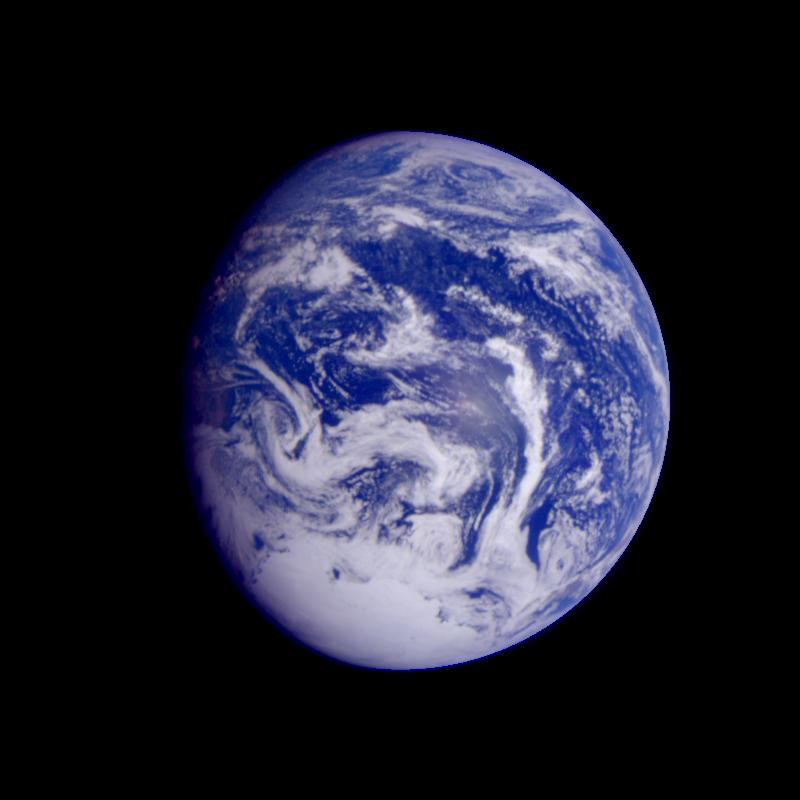
Earth
The third planet from the sun.
Orbit: 365 Earth Days
Day: 1 Earth Day
Fun fact: This is the only known planet with life!
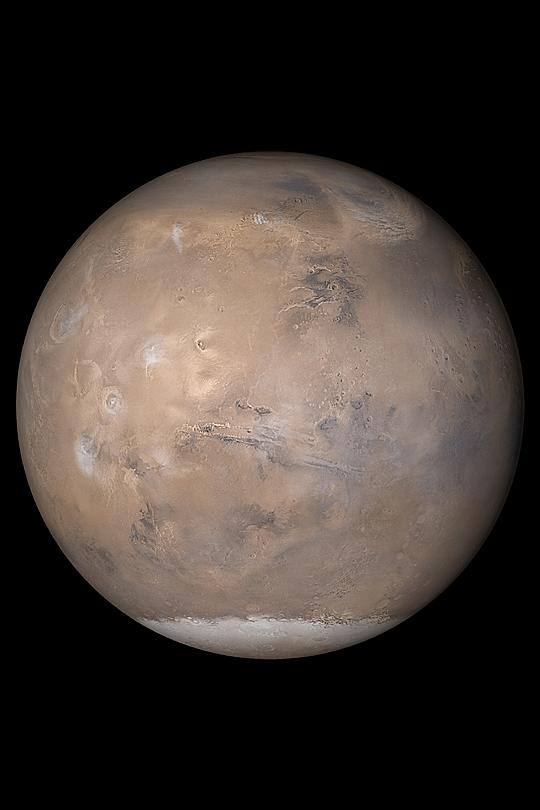
Mars
The fourth planet from the sun.
Orbit: 687 Earth Days
Day: 1.02 Earth Days
Fun fact: Even though Mars is now a rust-colored desert,
it was once like Earth with lots of water.
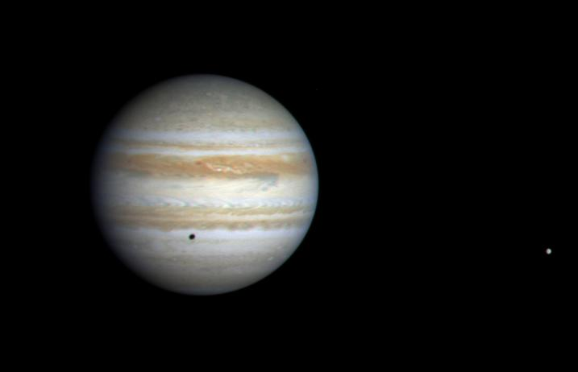
Jupiter
The fifth planet from the sun.
Orbit: 4,333 Earth Days
Day: 10 Earth Hours
Fun fact: It is so large that it could hold over 1,000 Earths!
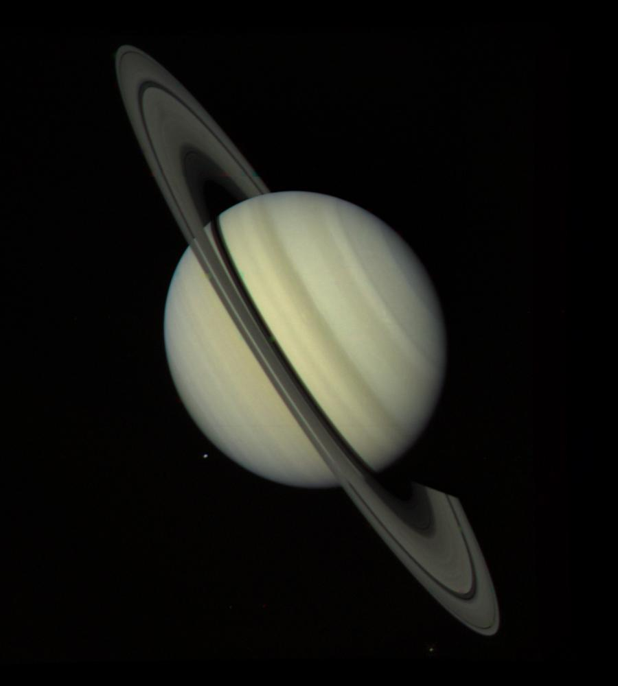
Saturn
The sixth planet from the sun.
Orbit: 10,756 Earth Days
Day: 10.5 Earth Hours
Fun fact: It has a dazzling system of rings. It has the most out of all
the objects in our solar system!
Uranus
The seventh planet from the sun.
Orbit: 30,687 Earth Days
Day: 17.25 Earth Hours
Fun fact: It is tilted nearly 98 degrees
on its axis, which is the most extreme
axial tilt in our solar system!
Neptune
The eighth planet from the sun.
Orbit: 60,195 Earth Days
Day: 16 Earth Hours
Fun fact: It is the only planet in our
solar system discovered using math!
Click the buttons below to learn about each dwarf planet!
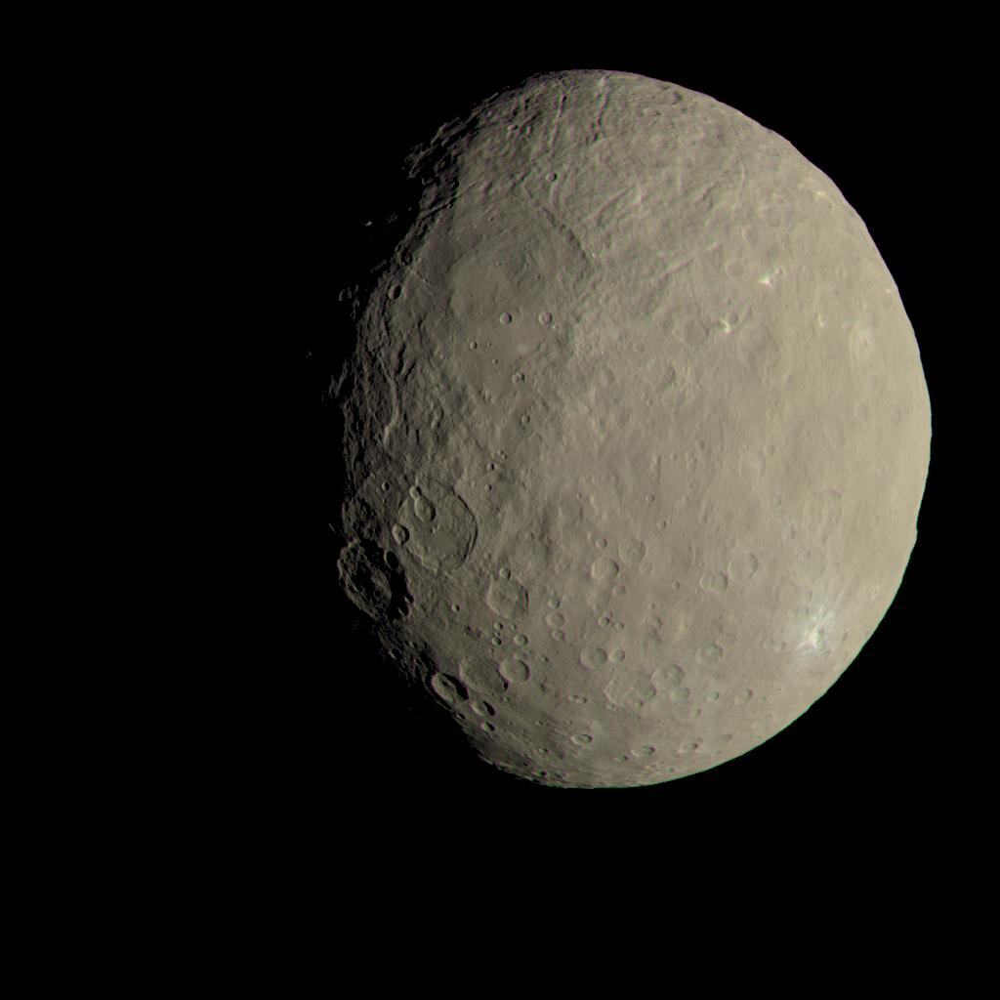
Ceres
The first dwarf planet from the sun.
Orbit: 1,682 Earth Days
Day: 9 Earth Hours
Fun fact: It has more fresh water than Earth!
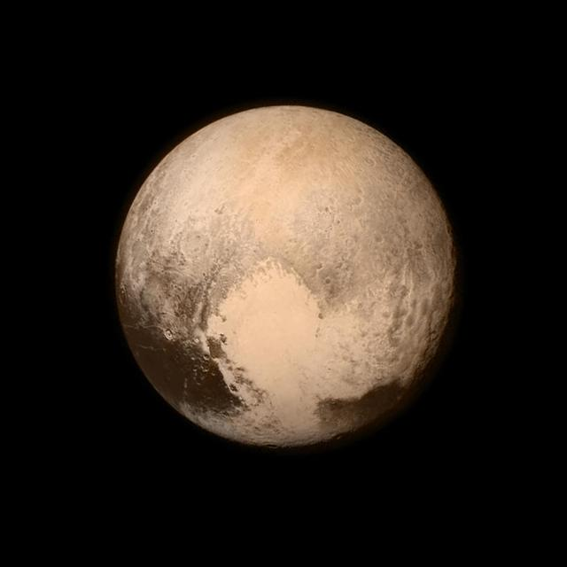
Pluto
The second dwarf planet from the sun.
Orbit: 90,560 Earth Days
Day: 153 Earth Hours
Fun fact: Even though it is a dwarf planet, it has 5 moons!
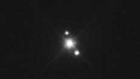
Haumea
The third dwarf planet from the sun.
Orbit: 103,410 Earth Days
Day: 3.9 Earth Hours
Fun fact: Its day is so short because massive ancient collision caused it to spin very fast.
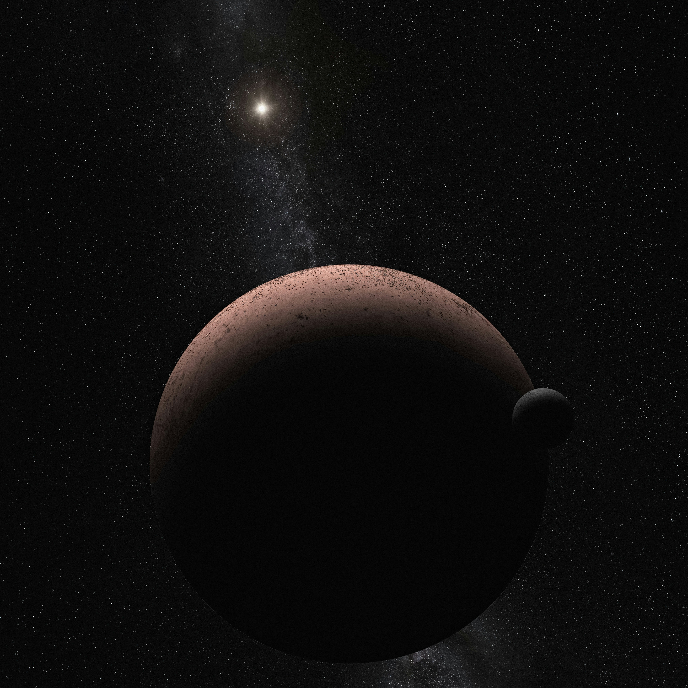
Makemake
The fourth dwarf planet from the sun.
Orbit: 112,022 Earth Days
Day: 22.5 Earth Hours
Fun fact: The team that discovered Makemake nicknamed it "Easter Bunny" because it was discovered a little bit before Easter!
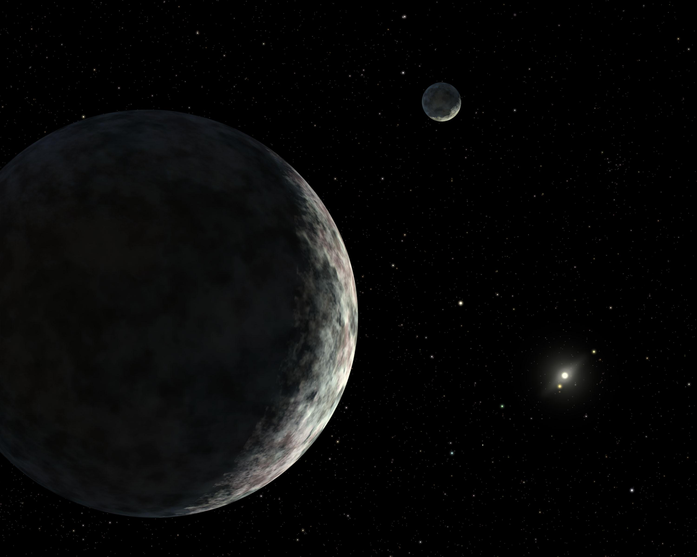
Eris
The fifth dwarf planet from the sun.
Orbit: 203,830 Earth Days
Day: 25.9 Earth Hours
Fun fact: Because it is so far away from the sun, it takes over 9 hours for sunlight to reach Eris!
Click the buttons below to learn about each major moon!
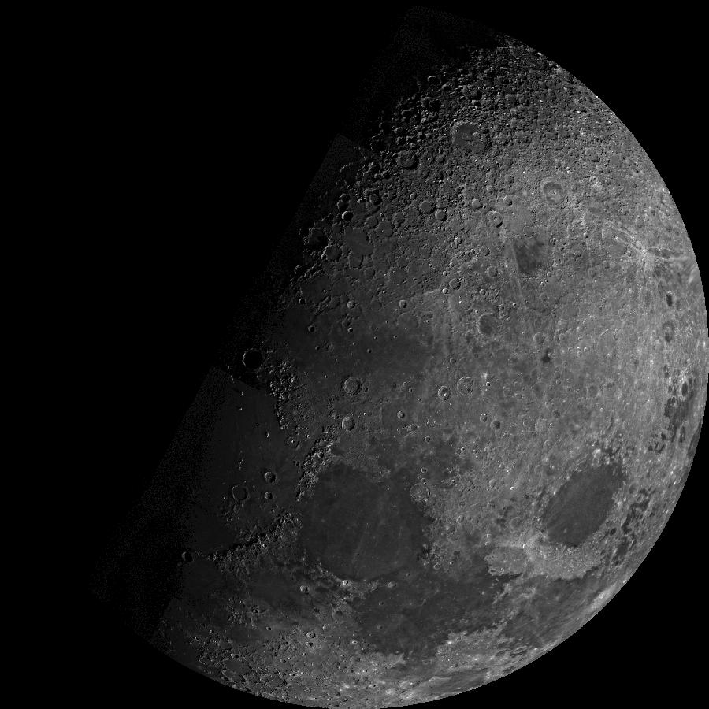
Earth's Moon
The moon of Earth
Orbit around Earth: 27.3 Earth Days
Day: 27.3 Earth Days
Fun fact: It is Earth's only moon!
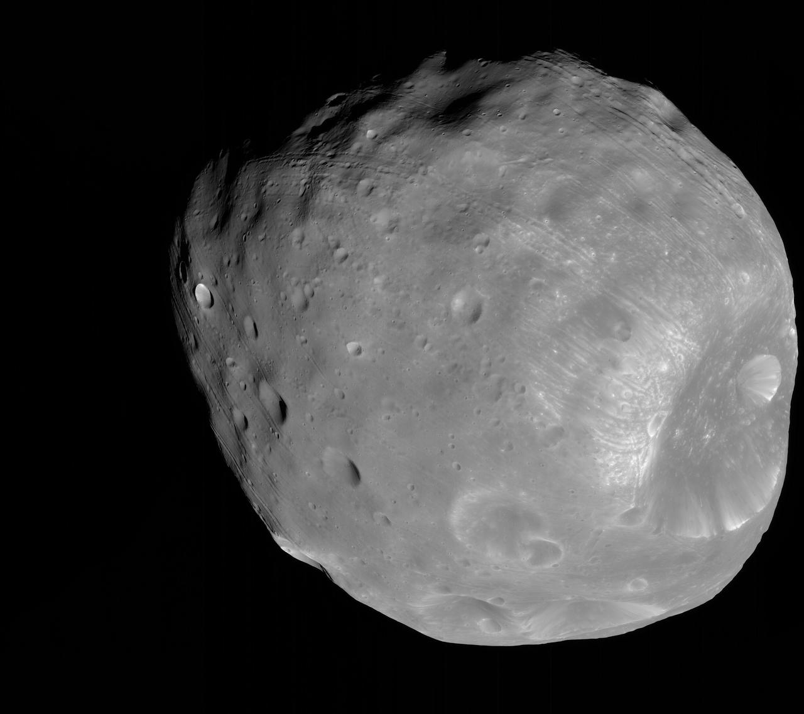
Phobos
A moon of Mars
Orbit around Mars: 7 Earth hours
Day: 7 Earth hours
Fun fact: Phobos orbits Mars so fast
that it orbits Mars 3 times every
Martian day!
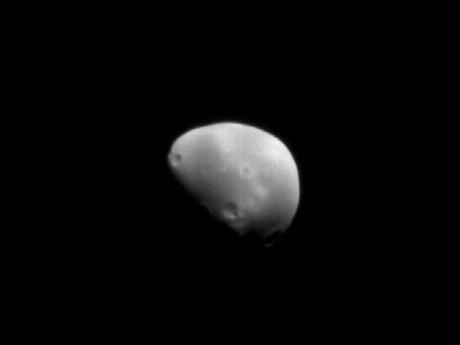
Deimos
A moon of Mars
Orbit around Mars: 30 Earth hours
Day: 30 Earth hours
Fun fact: It is so small and has such
little gravity that, theoretically,
a person could jump off of it
and go directly into space!
Ganymede
A moon of Jupiter
Orbit around Jupiter: 7.15 Earth days
Day: 7.15 Earth days
Fun fact: It is the largest moon
in our solar system, and it is even
larger than Mercury!
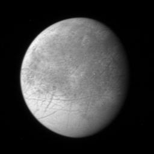
Europa
A moon of Jupiter
Orbit around Jupiter: 3.55 Earth days
Day: 3.55 Earth days
Fun fact: It is like a snow globe,
hiding a saltwater ocean under its surface
that has twice as much water as Earth's oceans!
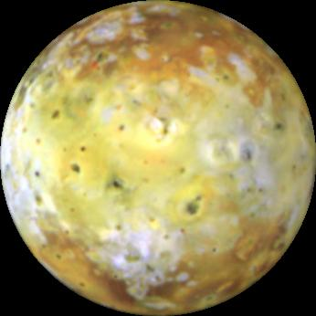
Io
A moon of Jupiter
Orbit around Jupiter: 1.77 Earth days
Day: 1.77 Earth days
Fun fact: It is the most volcanically
active thing in our solar system!
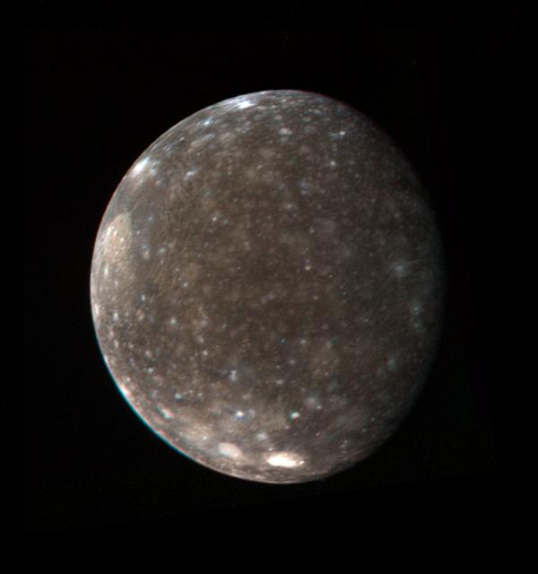
Callisto
A moon of Jupiter
Orbit around Jupiter: 16.7 Earth days
Day: 16.7 Earth days
Fun fact: It doesn't have a distinct
mantle and core; everything underneath
its surface is mixed together!
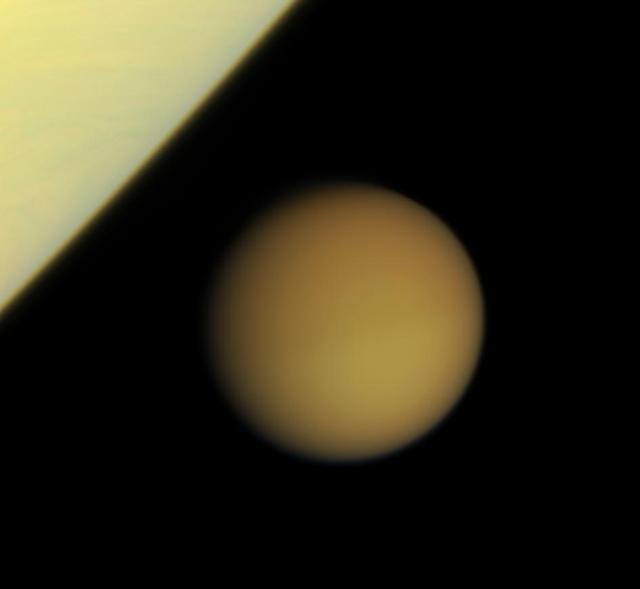
Titan
A moon of Saturn
Orbit around Saturn: 15.9 Earth days
Day: 15.9 Earth days
Fun fact: If you get artificial wings
and put them on your arms, you could
easily fly through its air!
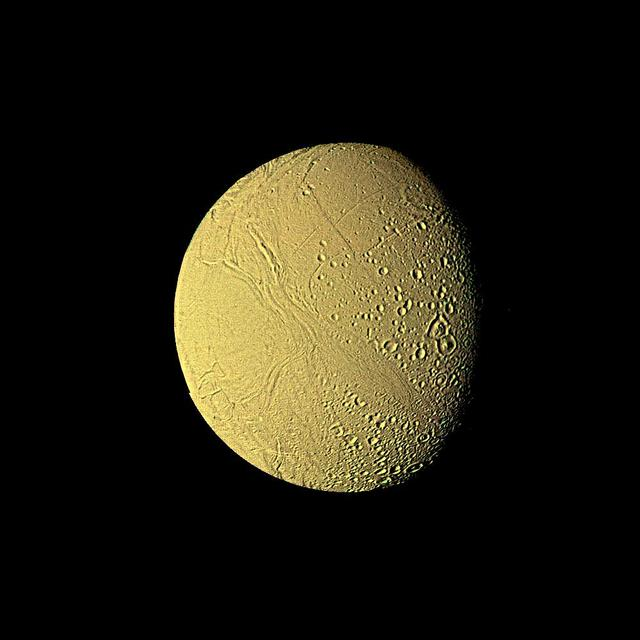
Enceladus
A moon of Saturn
Orbit around Saturn: 1.37 Earth days
Day: 1.37 Earth days
Fun fact: Geysers on its surface shoot
water ice particles into space; these
particles have created Saturn's outermost
ring.
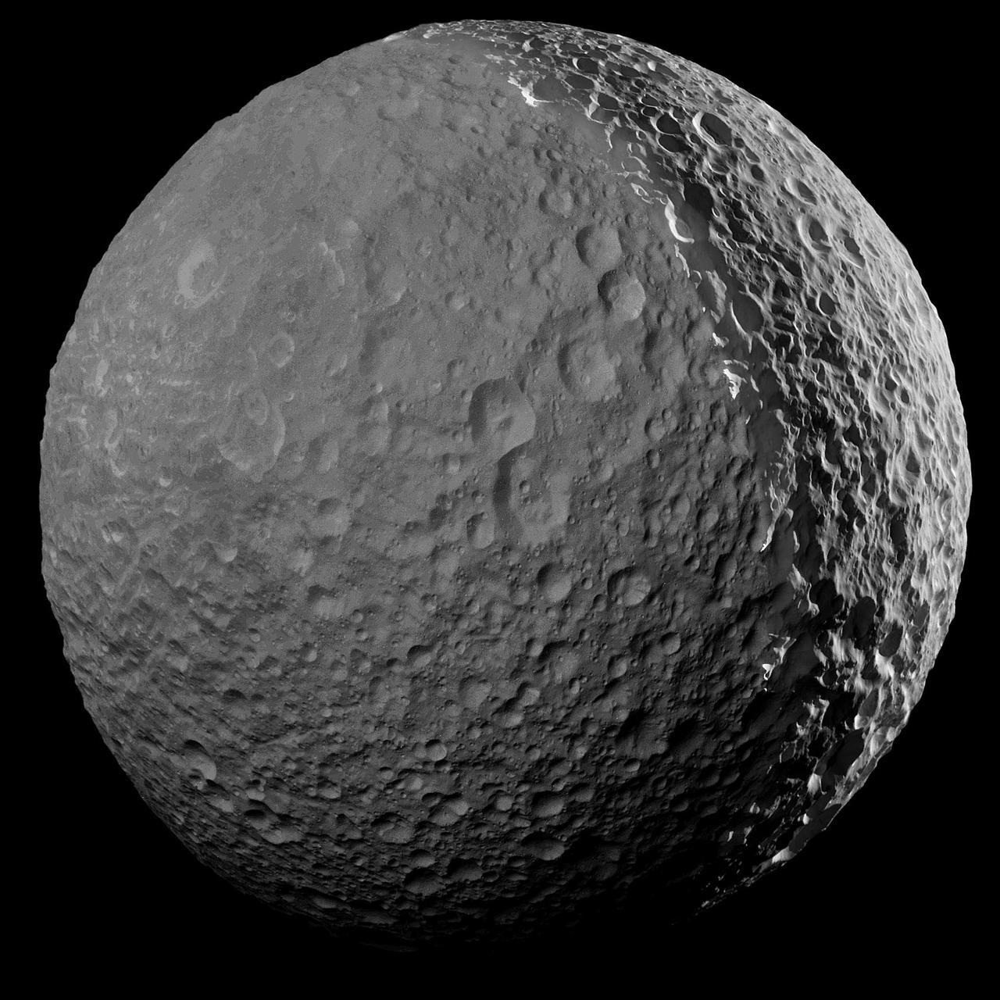
Mimas
A moon of Saturn
Orbit around Saturn: 0.94 Earth days
Day: 0.94 Earth days
Fun fact: It looks like "Death Star" from Star Wars.
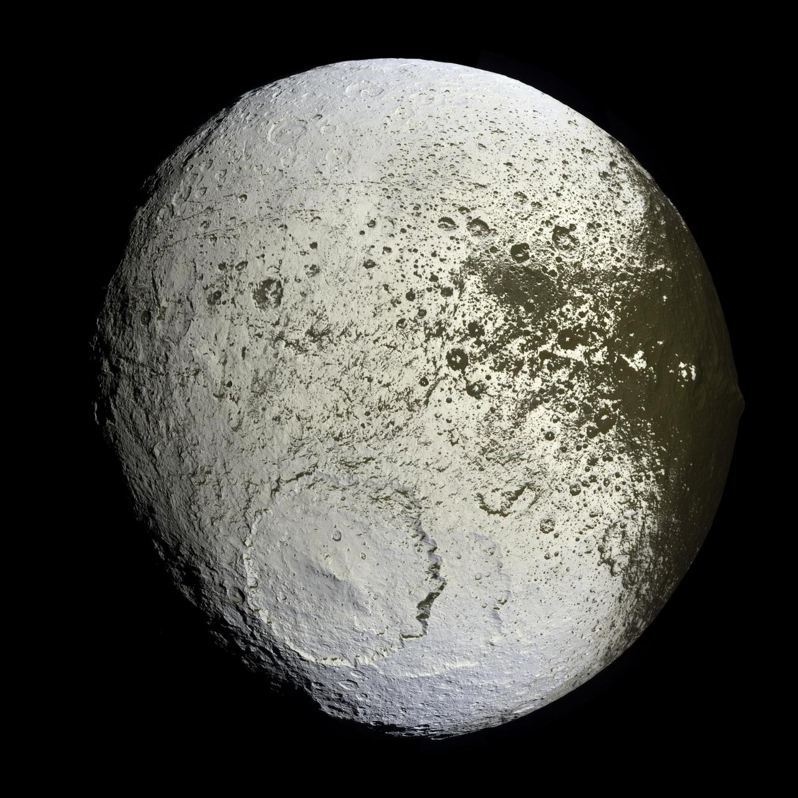
Iapetus
A moon of Saturn
Orbit around Saturn: 79.32 Earth days
Day: 79.32 Earth days
Fun fact: This moon has Permanent
Thermal Runaway.
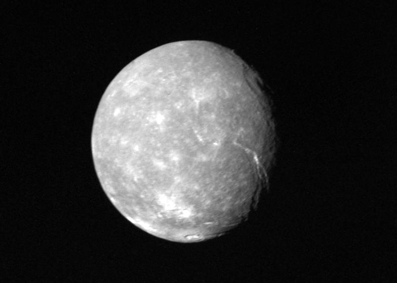
Titania
A moon of Uranus
Orbit around Uranus: 8.7 Earth days
Day: 8.7 Earth days
Fun fact: A huge canyon system covers
its entire frozen surface.
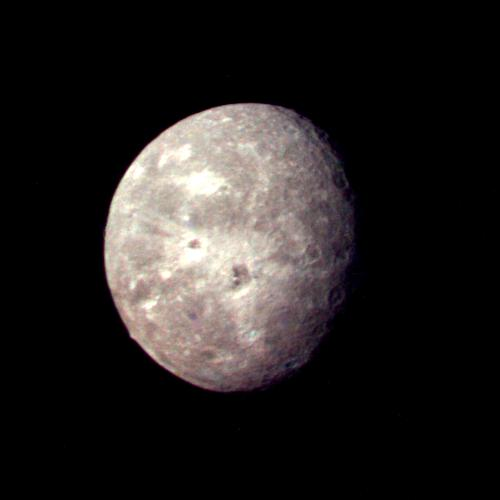
Oberon
A moon of Uranus
Orbit around Uranus: 13.46 Earth days
Day: 13.46 Earth days
Fun fact: Its craters' floors are covered
with a strange pitch-black material
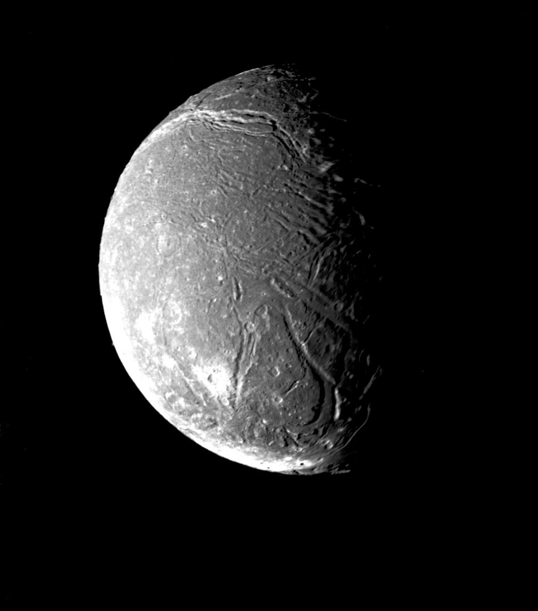
Ariel
A moon of Uranus
Orbit around Uranus: 2.52 Earth days
Day: 2.52 Earth days
Fun fact: It is the brightest and
smoothest moon of Uranus.
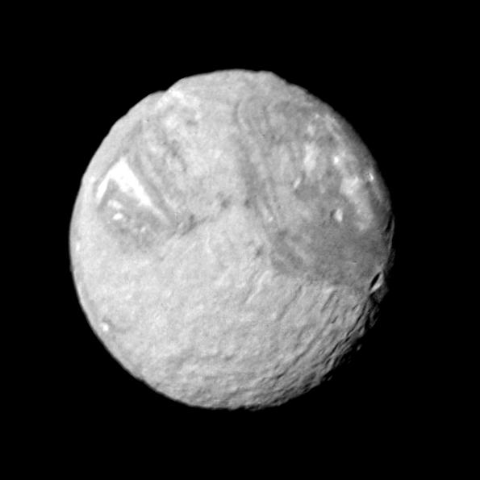
Miranda
A moon of Uranus
Orbit around Uranus: 1.41 Earth days
Day: 1.41 Earth days
Fun fact: It looks like a "Frankenstein"
moon (that was smashed apart and put
back together)
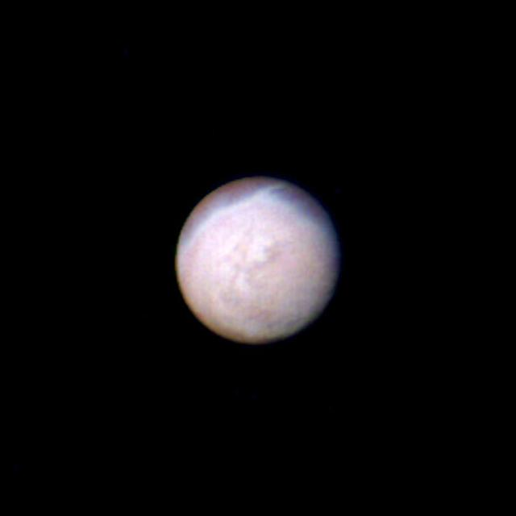
Triton
A moon of Neptune
Orbit around Neptune: 5.88 Earth days
Day: 5.88 Earth days
Fun fact: It is the only large moon
in our solar system to have a
retrograde rotation (it spins backwards)